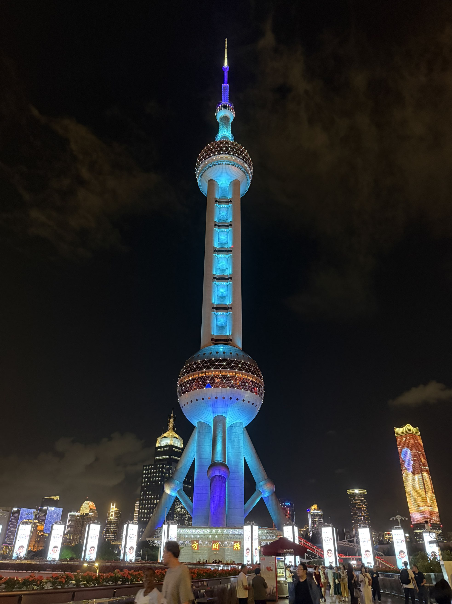

上海游记
本文最后更新于 2025年9月24日 凌晨
22号农历八月初一的生日，刚好朋友来上海面试，和朋友到这里提前过国庆，顺便过个生日游玩一下。
豫园
来上海第一感觉是外国人真的很多，大街上到处可见，不愧是中国第一大国际化都市。尤其是旅游景点，各国的游客都来拜访这里，豫园挺大的，绕着走也得走很一会，但人流大了显得有点逼仄，景色优美，很多假山假石，环境很清新，算是工业化城市中难得的原始景色了，听说傍晚来这里景色更好。

周一不开门，门票可以提前预约。
——2025/9/21 周日
城隍庙
城隍庙离豫园非常近，拜佛的地方，进去就是大殿，旁边也有月老殿、财神殿等，进去可以拿香火上香，来这里知道了上香要用左手在前右手在后。

——2025/9/21 周日
裕兴记
苏州风味的蟹黄面，118/碗，感觉有点贵，口味一般般吧，但是面料感觉挺不错的，带有小料、生姜汤和枸杞茶，如果只是作为高档的那种早餐应该还不错。

——2025/9/22 周一
鸟醺烧鸟居酒屋
日料，点了爆黄喉，棒棒鸡，牛肉乌冬和拉面，还有附赠的可尔必思和鸡腿肉，还有餐后的烤菠萝和冰淇淋，感觉还不错，至少口味和酱料这方面跟我之前吃过的日料还是不一样，有点独特的感觉，也很平价，环境专门布置成日风，服务周到，应该算没有踩到坑（笑）。

——2025/9/22 周一
百联ZX
魔都二次元的必经之地！很多专卖店，各种热门甚至一些比较冷门的IP谷子都有，从小徽章，亚克力牌到玩偶，手办等，很有氛围，六层逛个爽，这里也全是同好，进来感觉浓浓的异次元感啊！顺便帮朋友代购了点火影的谷子（以后我有钱了也要来这里买手办！）


——2025/9/21 周日
静安大悦城
这里主要还是商城，但是北座的6F还是8F有一些谷子店，潮玩星球之类的，有个书店很大，里面各种漫画都有，包括很冷门的IP！这应该是相对于百联的优势了，但是二次元的店家很少，就一层之中的几个店吧，专营店址类的也不多。


——2025/9/22 周一
南京路
人是真的多！尽管是周末非假期晚上，各地的游客都是多如牛毛的，两侧是建筑风格很有历史感的高级奢饰品店，感受氛围系列。


——2025/9/21 周日
上海博物馆东馆
有很多层，从青铜器，玉器到陶瓷等，每一层都很大要逛很久，挺累的，对历史感兴趣的话这里应该很好玩。


——2025/9/22 周一
东方明珠
在陆家嘴桥上看的，这里拍照打卡的人很多，视角还不错，上去逛好像要￥199，下次再来！



——2025/9/22 周一